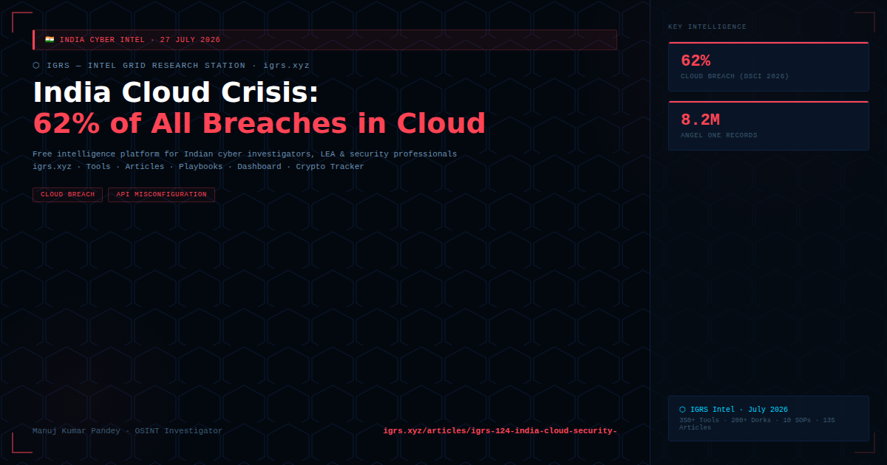

DSCI telemetry 2026 confirms that 62% of all cyber breach detections in India now occur in cloud environments. The cause is not sophisticated malware — it is misconfiguration. Exposed S3/Blob storage, excessive IAM permissions, and absent CSPM leave Indian organisations' most sensitive data publicly accessible.
| Metric | Figure |
|---|---|
| Cloud environment breaches | 62% of all detections (DSCI 2026) |
| Top vector | Misconfigured APIs and storage |
| Angel One breach | 8.2M customer records — IAM pivot in cloud |
| Multiple Indian banks | Cloud storage exposure — customer identity and transaction logs |
| Vector | India Impact |
|---|---|
| Misconfigured S3/Blob buckets | Publicly accessible without auth — indexed by Shodan/GrayhatWarfare |
| Excessive IAM permissions | One compromised account = lateral movement across entire tenancy |
| Exposed API keys in GitHub | Developer commits cloud keys to public repos — bots find within minutes |
| Unpatched cloud workloads | VMs without EDR — ransomware target |
| Cloud control plane attacks | Attacker provisions infrastructure, disables monitoring, achieves persistence |
Angel One case (2025): Dark web credentials + IAM pivot = 8.2M customer records exfiltrated from cloud — zero traditional perimeter breach involved. The textbook India cloud breach case.
DPDP Act: Misconfigured cloud storage leaving Indian citizens' personal data publicly accessible = failure of S.8(5) "reasonable security safeguards" obligation = up to ₹250 crore penalty.